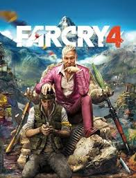

Far Cry 4 es un juego de acción y aventura en mundo abierto desarrollado por Ubisoft Montreal y publicado por Ubisoft en 2014. Ambientado en Kyrat, una región ficticia inspirada en el Himalaya, el jugador toma el control de Ajay Ghale, quien se ve envuelto en un conflicto civil entre los rebeldes de la región y el dictador Pagan Min. El juego combina exploración, misiones principales y secundarias, caza, conducción de vehículos y combate dinámico en un vasto entorno abierto que permite abordar los objetivos de múltiples formas.
El desarrollo estuvo a cargo de Ubisoft Montreal, con colaboración de varios estudios de Ubisoft a nivel mundial. Utiliza el motor Dunia Engine 2, que permite gráficos detallados, efectos de clima y físicas realistas para vehículos y personajes.
Entre sus actualizaciones más recientes se incluyeron mejoras de estabilidad y rendimiento, corrección de errores en misiones y ajustes en el equilibrio del combate y la inteligencia artificial de enemigos. También se añadieron contenidos descargables que ampliaron la historia y ofrecieron nuevas armas, vehículos y zonas para explorar, manteniendo el juego fresco y ofreciendo más opciones a los jugadores.